Empresas de médio porte que pararam de depender só de cliente novo e transformaram a base na principal fonte de receita previsível — com a Engage operando junto.
Quando a base passa a ser operada como sistema, o resultado aparece no caixa — e na cabeça de quem lidera.
Churns evitados, processos mais sólidos e equipe mais preparada. Passamos a operar retenção e expansão como sistema — com impacto direto em caixa.
De saúde a fitness, de SaaS a educação — o sistema se adapta ao negócio, a métrica-norte não muda: receita na base.
"O apoio no mapeamento da jornada e na metodologia de CS foi fundamental para avançar e colher resultados."

WeBurn'" />Fitness"Estruturamos retenção e recompra como operação contínua. A base virou um canal previsível de receita, não um esforço pontual."
"Passamos a enxergar a saúde de cada cliente em tempo real e a agir antes do churn. A retenção deixou de ser reativa."
"A estratégia de relacionamento e expansão trouxe previsibilidade para a receita da base. Hoje sabemos onde está a próxima venda."






ROI é o ganho (menos churn, mais upsell, mais indicação) dividido pelo investimento feito. Focar na base acelera esse retorno, porque o cliente já existe, só falta operar melhor o relacionamento.
O método se aplica a qualquer empresa com base de clientes ativa, mesmo que os números variem por segmento e maturidade. O padrão que se repete é: base operada com método responde com resultado.
Varia por empresa, mas as primeiras melhorias de churn e upsell costumam aparecer já nos primeiros meses de operação estruturada, com o ganho se acumulando depois.
Os exemplos vêm de segmentos diferentes (RH, saúde) porque o problema de fundo se repete: base de clientes com mais potencial de receita do que está sendo capturado. Se a sua empresa tem base ativa e ainda não opera ela com método, o padrão se aplica.
A Engage melhora como você opera o relacionamento com quem já é cliente, reduzindo cancelamento por falta de acompanhamento e abrindo oportunidade de venda. Isso não substitui correção de problema real de produto. As duas coisas juntas dão o resultado completo.